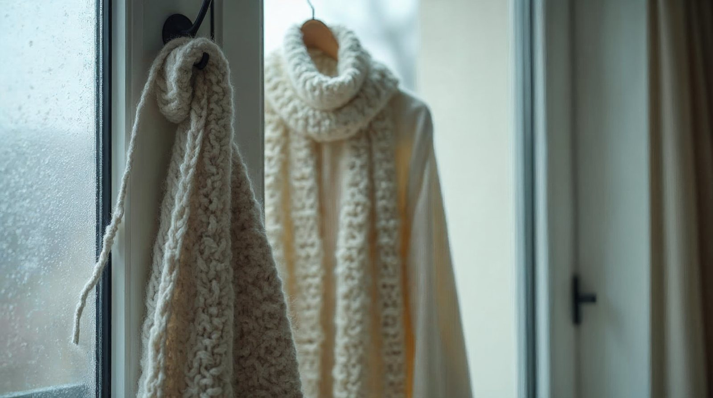
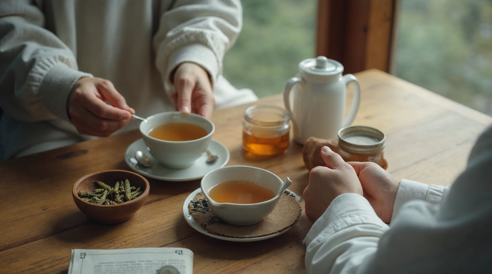
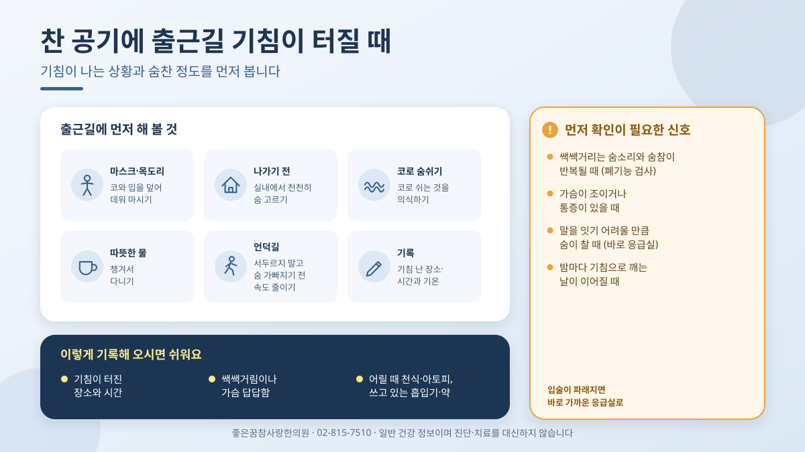

이종호 한의사 감수좋은꿈참사랑한의원 대표원장 (한의사 면허번호 19769)발행 2026-11-23 · 수정 2026-11-26
이 글의 차례
- 왜 이런 불편이 생길 수 있나요
- 왜 집을 나서는 그 순간에 터질까요?
- 다른 기침과는 어떻게 구분하나요?
- 먼저 이렇게 여쭙니다
- 스스로 점검해 보세요
- 상황별 예시
- 일상에서 먼저 해 볼 수 있는 것
- 집을 나서는 순서를 바꿔 볼까요?
- 걷는 동안 숨은 어떻게 쉴까요?
- 옷차림은 어떻게 챙길까요?
- 겨울이 오기 전에 준비할 것은 무엇인가요?
- 하루를 보내는 동안 무엇을 챙길까요?
- 저녁과 잠자리는 어떻게 챙길까요?
- 운동은 어떻게 이어 가면 좋을까요?
- 자주 하는 오해는 무엇인가요?
- 한의학에서는 찬 공기 기침을 어떻게 바라보나요?
- 한의원에서 함께 살필 수 있는 경우
- 첫 진료는 어떤 순서로 진행되나요?
- 다시 오셨을 때는 무엇을 비교하나요?
- 얼마나 지켜보고 언제 상담할까요
- 이렇게 기록해 오시면 상담이 쉬워집니다
- 이런 증상은 먼저 확인이 필요합니다
겨울 출근길 찬 공기를 마시면 기침이 터지는 것은 기도가 예민해진 상태에서 차고 마른 공기가 자극이 되는 경우가 많아, 기침이 나는 상황과 쌕쌕거림, 계단에서 숨찬 정도를 먼저 확인합니다. 아침 버스 정류장이나 지하철 출구를 나서는 순간 기침이 터져 한참 멈추지 못하고, 상도역이나 노량진역에서 언덕을 오르다 보면 숨까지 찬다는 분이 있습니다.
따뜻한 집 안에서는 멀쩡하다가 현관문을 열고 첫 숨을 들이쉬는 순간 목이 간질거리고, 사무실에 들어가 한참 앉아 있어야 겨우 잦아든다는 이야기도 자주 듣습니다. 겨울이 끝나면 잊었다가 다음 겨울에 다시 시작되니, 해마다 같은 계절을 기침으로 맞는 셈입니다.
저는 이 기침을 볼 때 '찬 공기'라는 방아쇠와 함께, 그 방아쇠에 유난히 예민해진 기도의 상태를 같이 봅니다. 언제부터, 어떤 길에서, 무엇과 함께 터지는지를 모으면 대처할 방법도 조금씩 보이기 때문입니다.
왜 이런 불편이 생길 수 있나요
- 차고 건조한 공기가 갑자기 들어오면 예민한 기도가 좁아지며 기침이 날 수 있습니다.
- 감기를 앓은 뒤나 비염이 있을 때 기도가 한동안 더 예민해지기도 합니다.
- 언덕이나 계단을 오르며 입으로 빠르게 숨을 쉬면 찬 공기가 데워지지 않고 들어갑니다.
- 반복된다면 천식 같은 기도 질환이 숨어 있을 수 있어 확인이 필요합니다.
왜 집을 나서는 그 순간에 터질까요?
코와 목은 들이마신 공기를 몸 온도에 가깝게 데우고 적셔서 폐로 보냅니다. 영하의 아침에 따뜻한 실내에서 갑자기 밖으로 나가면, 이 일을 해낼 틈도 없이 차고 마른 공기가 한꺼번에 기도로 들어갑니다.
기도 안쪽은 차가워지고 마르는 것에 예민하게 반응하는 곳이라, 이런 공기가 닿으면 간질거림과 함께 기침으로 밀어내려 합니다. 특히 감기를 앓은 뒤 몇 주는 기도 안쪽이 아직 회복 중이라 평소라면 견딜 공기에도 쉽게 기침이 터집니다.
출근길은 대개 서두르는 길입니다. 버스를 놓치지 않으려 뛰거나 역 계단을 빠르게 오르면 숨이 가빠져 입으로 크게 들이마시게 되고, 그만큼 데워지지 않은 공기가 더 깊이 들어갑니다.
다른 기침과는 어떻게 구분하나요?
- 찬 공기를 마신 직후 기침이 몰리고 실내에 들어와 몸이 데워지면 잦아든다면, 온도 변화에 예민한 기도를 먼저 떠올립니다.
- 감기 뒤 시작된 기침이 3주 넘게 남아 있다면 감기 뒤 기침이 오래가는 경우와 함께, 다른 원인이 없는지도 살펴봅니다.
- 콧물이 목 뒤로 넘어가며 헛기침이 잦고 아침에 심하다면 코 쪽 원인을 함께 봅니다.
- 누우면 기침이 심해지고 신물이 올라온다면 위산 역류와 관련된 기침과 구분이 필요합니다.
여러 원인이 겹쳐 있는 경우도 흔합니다. 그래서 기침이 나는 장소와 시간, 함께 오는 증상을 차례로 여쭙니다.
먼저 이렇게 여쭙니다
- 찬 공기를 마신 직후 기침이 시작되나요?
- 계단이나 언덕을 오를 때 숨이 차고 쌕쌕거리나요?
- 어릴 때 천식이나 아토피가 있었나요?
- 밤이나 새벽에 기침으로 깬 적이 있나요?
- 운동할 때도 기침이나 숨찬 느낌이 생기나요?
스스로 점검해 보세요
- 겨울만 되면 출근길 기침이 해마다 되풀이되나요?
- 마스크나 목도리 없이 집을 나서는 날이 많나요?
- 버스나 지하철 시간에 맞추려고 뛰거나 계단을 빠르게 오르는 일이 잦나요?
- 최근 한두 달 사이 감기를 앓은 적이 있나요?
- 코가 자주 막혀 걸을 때 입으로 숨을 쉬나요?
- 찬 음료를 마시거나 찬바람을 쐬면 목이 간질거리나요?
- 기침이 시작되면 몇 분씩 멈추지 않아 사람들 눈치가 보이나요?
해당하는 항목이 많다면 집을 나서는 순서와 걷는 속도, 코와 입을 덮는 습관부터 바꿔 보세요.
상황별 예시
- 예를 들어 아침마다 버스 정류장까지 뛰어가 바로 버스에 오르는 경우라면, 5분 일찍 나서서 걷는 속도로 가 보고, 정류장에 도착했을 때 기침이 덜한지 비교해 봅니다.
- 예를 들어 지하철역 출구를 나와 언덕을 오르는 출근길이라면, 출구 안쪽에서 마스크를 다시 고쳐 쓰고 숨을 고른 뒤 나서며, 언덕 중간에 한 번 서서 숨을 쉬어 가도 괜찮습니다.
- 예를 들어 새벽에 운동하러 나가는 습관이 있는 경우라면, 한겨울에는 실내 운동으로 바꾸거나 해가 오른 뒤로 시간을 옮겨 봅니다.
- 예를 들어 감기를 앓고 난 뒤부터 찬 공기 기침이 시작된 경우라면, 감기가 끝난 날을 기준으로 기침이 몇 주째인지 세어 두고, 점점 줄어드는지 그대로인지 적어 봅니다.
- 예를 들어 사무실 에어컨 바람이나 냉장 창고처럼 실내에서도 찬 공기를 쐬는 일이 있다면, 그 자리에서도 기침이 나는지 함께 적어 둡니다.

일상에서 먼저 해 볼 수 있는 것
- 마스크나 목도리로 코와 입을 덮어 공기를 데워 마시기
- 밖에 나가기 전 실내에서 천천히 숨 고르기
- 코로 숨쉬기를 의식하기
- 따뜻한 물을 챙겨 다니기
- 출근길 언덕은 서두르지 말고 숨이 가빠지기 전에 속도 줄이기
집을 나서는 순서를 바꿔 볼까요?
현관을 나서기 2~3분 전에 따뜻한 물을 한 잔 마시고, 신발을 신는 동안 코로 천천히 숨을 몇 번 쉬어 보세요. 몸과 목이 조금 데워진 상태에서 나가면 첫 숨의 충격이 덜하다는 분이 있습니다.
마스크와 목도리는 문을 열기 전에 미리 하고 나가세요. 밖에 나가서 쓰면 이미 첫 숨이 들어간 뒤입니다. 아파트 공동 현관이나 건물 로비처럼 바깥과 실내 사이의 공간이 있다면 그곳에서 잠깐 머물렀다 나가는 것도 온도 차를 줄이는 방법입니다.
걷는 동안 숨은 어떻게 쉴까요?
찬 공기에서는 입보다 코로 숨을 쉬는 것이 기본입니다. 코로 들이마신 공기는 목에 닿기 전에 한 번 데워지고 적셔지기 때문입니다. 코로만 숨 쉬기 벅찰 만큼 빨리 걷고 있다면 속도를 늦추라는 신호로 받아들여 주세요.
언덕이나 계단에서는 보폭을 줄이고, 두세 걸음에 한 번 들이쉬고 두세 걸음에 한 번 내쉬는 식으로 숨의 박자를 맞춰 보세요. 기침이 나기 시작하면 잠깐 멈춰 마스크 안에서 천천히 숨을 고르고, 가라앉은 뒤 다시 걷습니다. 늦을까 봐 조급해지는 마음이 숨을 더 가쁘게 만들기도 합니다.
옷차림은 어떻게 챙길까요?
목과 가슴 위쪽이 차가워지면 기침이 더 잘 터진다는 분이 많습니다. 목이 드러나는 옷보다 목을 감싸는 옷을 고르고, 목도리는 코와 입까지 올릴 수 있는 넉넉한 길이로 준비해 두세요.
두꺼운 외투 하나보다 얇은 옷을 여러 겹 입는 쪽이 실내외를 오갈 때 체온을 맞추기 쉽습니다. 지하철 안이나 사무실에 들어가 땀이 날 만큼 덥다면 한 겹 벗고, 나갈 때 다시 입으세요. 땀이 식으며 몸이 차가워지면 다음에 바깥 공기를 마실 때 기침이 더 잘 납니다.
장갑과 따뜻한 양말도 챙겨 주세요. 손발이 꽁꽁 언 상태로 걷다 보면 온몸이 움츠러들며 숨도 얕고 빨라지기 쉽습니다. 몸이 따뜻해야 숨도 고르게 쉬어집니다.
겨울이 오기 전에 준비할 것은 무엇인가요?
해마다 같은 계절에 기침이 시작된다면, 첫 한파가 오기 전에 미리 준비해 두는 것이 좋습니다. 목도리와 마스크를 현관 가까이에 두고, 침실 습도계를 점검하고, 출근 시간을 몇 분 앞당길 수 있는지 일정을 살펴보세요.
가을 끝 무렵 감기를 앓지 않도록 잠과 식사를 챙기는 것도 준비의 하나입니다. 감기 뒤에 기도가 예민해져 겨울 내내 기침이 이어지는 분이 많기 때문입니다. 지난겨울 기침이 시작된 날짜를 기억한다면 달력에 미리 표시해 두세요.
하루를 보내는 동안 무엇을 챙길까요?
사무실에 도착하면 바로 차가운 음료를 마시기보다 따뜻한 물이나 차로 목을 먼저 적셔 주세요. 실내가 건조하다면 책상 위에 작은 가습기나 물컵을 두는 것도 좋습니다.
점심시간에 잠깐 밖에 나갈 때도 겉옷과 마스크를 챙기세요. 아침만 조심하고 점심에는 얇게 나갔다가 다시 기침이 터지는 분이 적지 않습니다. 퇴근길은 해가 진 뒤라 아침만큼 춥기도 하니, 같은 순서를 저녁에도 지켜 주세요.
저녁과 잠자리는 어떻게 챙길까요?
기도가 예민한 시기에는 밤사이 회복할 시간이 중요합니다. 잠들기 두세 시간 전에 저녁을 마치고, 따뜻한 물로 샤워해 코와 목을 적신 뒤 잠자리에 드세요.
침실이 너무 건조하면 밤사이 기도가 말라 다음 날 아침 더 예민해질 수 있습니다. 습도를 40~60% 정도로 맞추고, 창문 틈으로 찬바람이 들어온다면 침대 위치를 바꾸거나 틈을 막아 두세요.
운동은 어떻게 이어 가면 좋을까요?
찬 공기 기침이 있다고 운동을 모두 멈출 필요는 없습니다. 다만 한겨울 아침 야외 달리기처럼 차고 마른 공기를 크게 들이마시는 운동은 실내 운동이나 낮 시간 걷기로 바꿔 보세요.
실내에서도 처음 10분은 천천히 걷거나 가볍게 몸을 풀며 숨을 서서히 늘려 가는 것이 좋습니다. 갑자기 숨이 가빠지는 운동보다 고르게 숨을 쉴 수 있는 강도로 시작하고, 운동 중에도 물을 조금씩 마셔 목을 적셔 주세요.
자주 하는 오해는 무엇인가요?
- 찬 공기에 자꾸 노출해야 기도가 단련된다는 생각: 이미 예민해진 기도에 찬 공기를 일부러 쐬면 기침을 더 부를 수 있습니다.
- 겨울 기침은 감기라서 지나가면 끝이라는 생각: 감기 없이 해마다 겨울마다 반복된다면 기도의 예민함을 한 번 살펴보는 것이 좋습니다.
- 기침이 날 때 사탕을 물면 멈춘다는 생각: 목이 잠깐 촉촉해질 수는 있지만, 찬 공기를 덜 마시게 하는 습관이 먼저입니다.
- 따뜻하게 입으면 마스크는 안 써도 된다는 생각: 옷은 몸을 데워 주지만 들이마시는 공기까지 데워 주지는 못합니다. 코와 입을 덮어야 기도에 닿는 공기가 덜 차갑습니다.
- 기침이 잦아들면 바로 서둘러 걸어도 된다는 생각: 기침이 멈춘 직후에도 기도는 한동안 예민해 있어, 몇 분은 천천히 걸으며 숨을 고르는 것이 좋습니다.
한의학에서는 찬 공기 기침을 어떻게 바라보나요?
한의학에서는 찬 기운에 쉽게 기침이 나고 맑은 콧물이 함께 흐르는 모습을 몸의 겉을 지키는 힘이 약해졌거나 몸이 찬 경향과 연결해 살피는 경우가 있습니다. 그래서 기침만 보지 않고 손발이 찬지, 쉽게 지치는지, 감기에 자주 걸리는지를 함께 여쭙니다.
대표원장은 잘 먹고, 잘 싸고, 잘 자고, 마음 편하고, 몸 따뜻하게, 이 다섯 가지를 몸이 회복하는 바탕으로 봅니다. 찬 공기 기침으로 오신 분께 잠과 소화, 몸의 온기를 빠짐없이 여쭙는 것도 그 바탕이 어디서 흔들렸는지 찾기 위해서입니다.

한의원에서 함께 살필 수 있는 경우
- 찬 공기에 기침이 반복되는 경우 호흡기 상태와 몸이 차고 예민한 편인지 함께 살핍니다.
- 기침 때문에 잠을 설치는 경우 잠도 함께 살핍니다.
- 쉽게 지치고 회복이 더딘 경우 몸 전체의 리듬을 함께 살핍니다.
좋은꿈참사랑한의원에서는 기침이 터지는 상황과 출퇴근 길을 먼저 듣고, 진맥을 기본으로 하고 필요하다고 판단될 때 설진을 더해 몸 상태를 살핀 뒤 침이나 한약 상담 등 상태에 맞는 방법을 정합니다. 폐기능 검사가 먼저 필요해 보이면 다른 의료기관을 함께 안내합니다.
흡입기나 기침약을 쓰고 계신다면 이름을 알려 주세요. 처방받은 약은 처방한 의사와 상의 없이 줄이거나 끊지 마시고, 한약 상담도 지금 쓰는 약을 확인한 뒤에 진행합니다. 임신 중이라면 먼저 말씀해 주시고 산부인과와도 상의해 주세요.
첫 진료는 어떤 순서로 진행되나요?
- 모든 분의 맥을 먼저 짚고, 기침이 시작된 시기와 터지는 장소·시간을 듣습니다.
- 출퇴근 길과 걷는 속도, 마스크와 목도리 습관, 운동할 때의 모습을 여쭙니다.
- 어릴 때 천식·아토피 여부, 가족력, 최근 감기, 비염, 쓰는 약을 확인합니다.
- 상태에 맞는 방법을 정한 뒤, 다음 진료까지 바꿔 볼 순서와 기록할 것을 함께 정합니다.
다시 오셨을 때는 무엇을 비교하나요?
두 번째 진료부터는 다시 맥을 짚고, 그사이 출근길 기록을 함께 봅니다. 마스크를 미리 쓰고 천천히 걸은 날과 서둘렀던 날에 기침이 어떻게 달랐는지, 바깥 기온이 많이 떨어진 날은 어땠는지를 나눠 여쭙니다.
지키기 어려웠던 습관이 있다면 출근 시간과 길에 맞게 다른 방법으로 바꿀 수 있는지 함께 찾아봅니다. 한파가 이어지는 주라면 그 주에 특히 신경 쓸 점도 따로 짚어 드립니다.
얼마나 지켜보고 언제 상담할까요
집을 나서는 순서와 걷는 속도, 코와 입을 덮는 습관을 바꾼 뒤 2~3주 정도 출근길 기침을 적어 보세요. 그래도 거의 매일 아침 기침이 이어지거나 밤에도 기침으로 깬다면 상담을 받아 보시기를 권합니다.
이렇게 기록해 오시면 상담이 쉬워집니다
- 기침이 터진 장소와 시간(예: 출구를 나선 직후, 언덕 중간)
- 쌕쌕거림이나 가슴 답답함이 있었는지
- 어릴 때 천식·아토피 여부와 가족력
- 쓰고 있는 흡입기나 약
- 기침이 났던 날의 바깥 기온과 바람
휴대폰 날씨 앱에서 그날 아침 기온을 보고 '영하 5도, 출구 나서자마자 기침 2분' 정도로 한 줄씩 남겨 두면 됩니다. 두세 주가 모이면 몇 도 아래에서 특히 힘든지, 어느 지점에서 터지는지가 보입니다. 마스크를 썼는지, 뛰었는지도 한 단어씩 덧붙이면 비교가 한결 쉬워집니다.
겨울 아침을 기침으로 시작하는 날이 조금씩 줄도록, 오시면 출근길 가장 힘든 구간부터 함께 짚어 보겠습니다.
이런 증상은 먼저 확인이 필요합니다
- 쌕쌕거리는 숨소리와 숨찬 증상이 반복되는 경우(폐기능 검사 권장)
- 가슴이 조이거나 통증이 있는 경우
이런 신호가 있으면 한의원보다 가까운 병원이나 응급실을 먼저 찾으세요.

여쭙는 것
- 찬 공기를 마신 직후 기침이 시작되나요?
- 계단이나 언덕을 오를 때 숨이 차고 쌕쌕거리나요?
- 어릴 때 천식이나 아토피가 있었나요?
생활에서 해 볼 것
- 마스크나 목도리로 코와 입을 덮어 공기를 데워 마시기
- 밖에 나가기 전 실내에서 천천히 숨 고르기
- 코로 숨쉬기를 의식하기
한의원에서 함께 살필 것
- 찬 공기에 기침이 반복되는 경우 호흡기 상태와 몸이 차고 예민한 편인지 함께 살핍니다.
- 기침 때문에 잠을 설치는 경우 잠도 함께 살핍니다.
- 쉽게 지치고 회복이 더딘 경우 몸 전체의 리듬을 함께 살핍니다.
먼저 확인이 필요한 신호
- 쌕쌕거리는 숨소리와 숨찬 증상이 반복되는 경우(폐기능 검사 권장)
- 가슴이 조이거나 통증이 있는 경우
한눈에 보는 표
| 구분 | 핵심 |
|---|---|
| 여쭙는 것 | 찬 공기를 마신 직후 기침이 시작되나요? 계단이나 언덕을 오를 때 숨이 차고 쌕쌕거리나요? |
| 생활에서 해 볼 것 | 마스크나 목도리로 코와 입을 덮어 공기를 데워 마시기 밖에 나가기 전 실내에서 천천히 숨 고르기 |
| 한의원에서 함께 살필 것 | 찬 공기에 기침이 반복되는 경우 호흡기 상태와 몸이 차고 예민한 편인지 함께 살핍니다. 기침 때문에 잠을 설치는 경우 잠도 함께 살핍니다. |
| 먼저 확인이 필요한 신호 | 쌕쌕거리는 숨소리와 숨찬 증상이 반복되는 경우(폐기능 검사 권장) 가슴이 조이거나 통증이 있는 경우 |
자주 묻는 질문
천식일까 봐 걱정돼요.
증상만으로는 알기 어려워 폐기능 검사가 필요할 수 있습니다. 필요하면 다른 의료기관 검사를 안내해 드립니다.
운동을 해도 되나요?
실내에서 충분히 몸을 푼 뒤 가볍게 시작하고, 숨이 많이 차면 멈추세요.
마스크를 쓰면 도움이 되나요?
코와 입을 덮으면 공기가 조금 데워져 들어가 자극을 줄이는 데 도움이 될 수 있습니다.
겨울에만 그런데 봄이 되면 괜찮아질까요?
날이 풀리면 덜해지는 분도 있지만, 해마다 반복되거나 쌕쌕거림이 있으면 검사를 먼저 권합니다.
따뜻한 차를 들고 다니면 도움이 되나요?
작은 보온병에 따뜻한 물이나 차를 담아 두고 기침이 나기 시작할 때 한 모금씩 마시면 목이 덜 간질거린다는 분이 있습니다. 걸으면서 마시기보다 잠깐 멈춰서 마시세요.
좋은꿈참사랑한의원은 재진 때 지난번 이야기부터 이어서 여쭙니다. 진료시간과 예약은 오시는 길에서 확인하세요.
어디서 상담받을 수 있나요?
좋은꿈참사랑한의원은 서울 동작구 만양로2길 2 신성빌딩 3층·5층(서울 동작구 상도동, 7호선 상도역 3번 출구 근처)에 있습니다. 한의사 3명(이종호 대표원장, 조영기 수석진료원장, 정원영 진료원장)이 진료합니다. 진료시간은 평일 09:30~20:00(점심 13:00~14:00), 토·일·공휴일 09:30~15:00이며, 방문 전 전화로 확인을 권합니다. 예약은 네이버 예약, 카카오톡 상담, 전화 02-815-7510로 받습니다.
이 글은 일반적인 건강 정보이며 개인의 진단이나 치료를 대신하지 않습니다. 증상이 있거나 복용 중인 약이 있다면 진료를 통해 확인하세요. 치료 효과는 개인마다 다를 수 있습니다.
작성 기준: 일반적으로 알려져 있는 건강 정보를 참고해 정리했습니다(대표원장 감수). 증상 기록은 1~2주 동안 하루 1회, 비슷한 시간에 적어 오시면 지난 상태와 비교하기 쉽습니다.